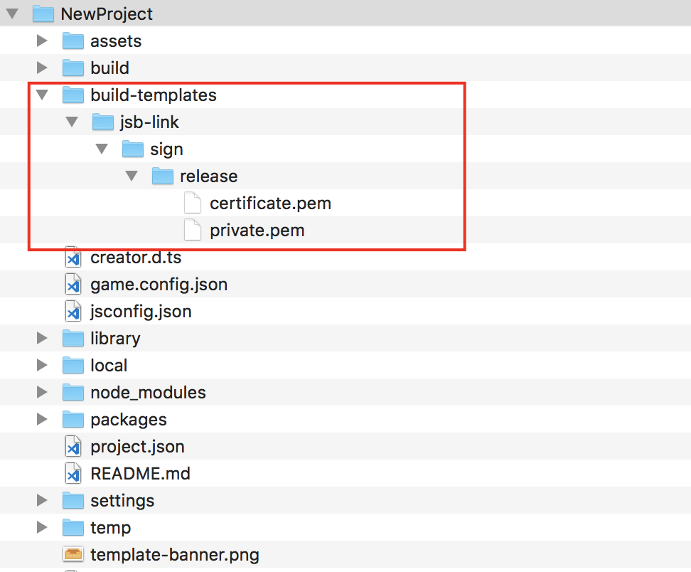
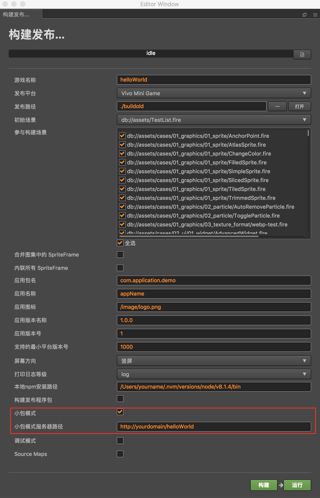
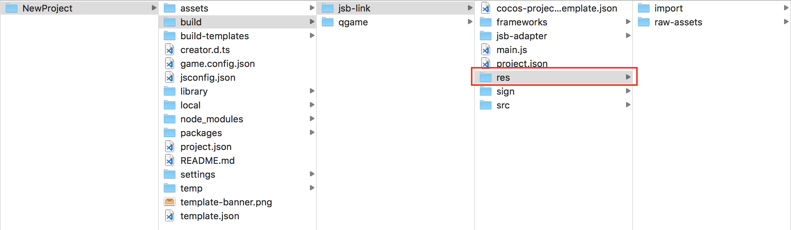
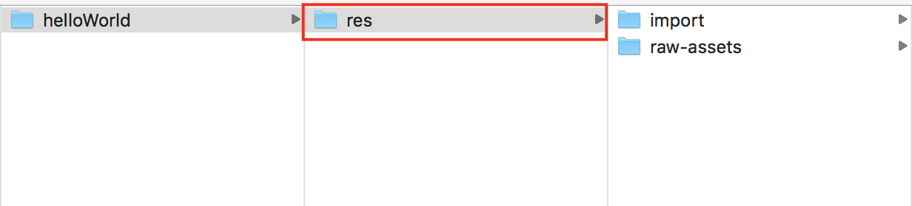

<!DOCTYPE HTML>
<html lang="" >
    <head>
        <meta charset="UTF-8">
        <meta content="text/html; charset=utf-8" http-equiv="Content-Type">
        <title>cocos creator接入说明 · GitBook</title>
        <meta http-equiv="X-UA-Compatible" content="IE=edge" />
        <meta name="description" content="">
        <meta name="generator" content="GitBook 3.2.3">
        
        
        
    
    <link rel="stylesheet" href="../../gitbook/style.css">

    
            
                
                <link rel="stylesheet" href="../../gitbook/gitbook-plugin-highlight/website.css">
                
            
                
                <link rel="stylesheet" href="../../gitbook/gitbook-plugin-search/search.css">
                
            
                
                <link rel="stylesheet" href="../../gitbook/gitbook-plugin-fontsettings/website.css">
                
            
        

    

    
        
    
        
    
        
    
        
    
        
    
        
    

        
    
    
    <meta name="HandheldFriendly" content="true"/>
    <meta name="viewport" content="width=device-width, initial-scale=1, user-scalable=no">
    <meta name="apple-mobile-web-app-capable" content="yes">
    <meta name="apple-mobile-web-app-status-bar-style" content="black">
    <link rel="apple-touch-icon-precomposed" sizes="152x152" href="../../gitbook/images/apple-touch-icon-precomposed-152.png">
    <link rel="shortcut icon" href="../../gitbook/images/favicon.ico" type="image/x-icon">

    
    <link rel="next" href="../kai-fa-chang-jian-wen-ti.html" />
    
    
    <link rel="prev" href="../idejie-ru-shuo-ming.html" />
    

    </head>
    <body>
        
<div class="book">
    <div class="book-summary">
        
            
<div id="book-search-input" role="search">
    <input type="text" placeholder="Type to search" />
</div>

            
                <nav role="navigation">
                


<ul class="summary">
    
    

    

    
        
        
    
        <li class="chapter " data-level="1.1" data-path="../../">
            
                <a href="../../">
            
                    
                    Introduction
            
                </a>
            

            
        </li>
    
        <li class="chapter " data-level="1.2" data-path="../../kuai-you-xi-jiao-cheng.html">
            
                <a href="../../kuai-you-xi-jiao-cheng.html">
            
                    
                    vivo小游戏教程
            
                </a>
            

            
            <ul class="articles">
                
    
        <li class="chapter " data-level="1.2.1" data-path="../xia-zai-yu-geng-xin.html">
            
                <a href="../xia-zai-yu-geng-xin.html">
            
                    
                    下载与更新
            
                </a>
            

            
        </li>
    
        <li class="chapter " data-level="1.2.2" data-path="../vivokuai-you-xi-diao-shi-shuo-ming.html">
            
                <a href="../vivokuai-you-xi-diao-shi-shuo-ming.html">
            
                    
                    vivo小调试说明
            
                </a>
            

            
        </li>
    
        <li class="chapter " data-level="1.2.3" data-path="../vivokuai-you-xi-da-bao-gong-ju-shuo-ming.html">
            
                <a href="../vivokuai-you-xi-da-bao-gong-ju-shuo-ming.html">
            
                    
                    vivo小游戏打包工具说明
            
                </a>
            

            
        </li>
    
        <li class="chapter " data-level="1.2.4" data-path="../idejie-ru-shuo-ming.html">
            
                <a href="../idejie-ru-shuo-ming.html">
            
                    
                    IDE接入说明
            
                </a>
            

            
            <ul class="articles">
                
    
        <li class="chapter active" data-level="1.2.4.1" data-path="cocos-creatorjie-ru-shuo-ming.html">
            
                <a href="cocos-creatorjie-ru-shuo-ming.html">
            
                    
                    cocos creator接入说明
            
                </a>
            

            
        </li>
    

            </ul>
            
        </li>
    
        <li class="chapter " data-level="1.2.5" data-path="../kai-fa-chang-jian-wen-ti.html">
            
                <a href="../kai-fa-chang-jian-wen-ti.html">
            
                    
                    开发常见问题
            
                </a>
            

            
        </li>
    
        <li class="chapter " data-level="1.2.6" data-path="../chromediao-shi-kuai-you-xi-dai-ma-shuo-ming.html">
            
                <a href="../chromediao-shi-kuai-you-xi-dai-ma-shuo-ming.html">
            
                    
                    chrome调试vivo小游戏代码说明
            
                </a>
            

            
        </li>
    

            </ul>
            
        </li>
    
        <li class="chapter " data-level="1.3" data-path="../../kuai-you-xi-api-wen-dang.html">
            
                <a href="../../kuai-you-xi-api-wen-dang.html">
            
                    
                    vivo小游戏API文档
            
                </a>
            

            
            <ul class="articles">
                
    
        <li class="chapter " data-level="1.3.1" data-path="../../kuai-you-xi-api-wen-dang/quan-ju-shi-jian.html">
            
                <a href="../../kuai-you-xi-api-wen-dang/quan-ju-shi-jian.html">
            
                    
                    全局事件
            
                </a>
            

            
            <ul class="articles">
                
    
        <li class="chapter " data-level="1.3.1.1" data-path="../../kuai-you-xi-api-wen-dang/quan-ju-shi-jian/sheng-ming-zhou-qi.html">
            
                <a href="../../kuai-you-xi-api-wen-dang/quan-ju-shi-jian/sheng-ming-zhou-qi.html">
            
                    
                    生命周期
            
                </a>
            

            
        </li>
    
        <li class="chapter " data-level="1.3.1.2" data-path="../../kuai-you-xi-api-wen-dang/quan-ju-shi-jian/tui-chu-you-xi.html">
            
                <a href="../../kuai-you-xi-api-wen-dang/quan-ju-shi-jian/tui-chu-you-xi.html">
            
                    
                    退出游戏
            
                </a>
            

            
        </li>
    
        <li class="chapter " data-level="1.3.1.3" data-path="../../kuai-you-xi-api-wen-dang/quan-ju-shi-jian/quan-ju-cuo-wu.html">
            
                <a href="../../kuai-you-xi-api-wen-dang/quan-ju-shi-jian/quan-ju-cuo-wu.html">
            
                    
                    全局错误
            
                </a>
            

            
        </li>
    
        <li class="chapter " data-level="1.3.1.4" data-path="../../kuai-you-xi-api-wen-dang/quan-ju-shi-jian/ding-shi-qi.html">
            
                <a href="../../kuai-you-xi-api-wen-dang/quan-ju-shi-jian/ding-shi-qi.html">
            
                    
                    定时器
            
                </a>
            

            
        </li>
    
        <li class="chapter " data-level="1.3.1.5" data-path="../../kuai-you-xi-api-wen-dang/quan-ju-shi-jian/chang-shang-biao-shi.html">
            
                <a href="../../kuai-you-xi-api-wen-dang/quan-ju-shi-jian/chang-shang-biao-shi.html">
            
                    
                    厂商标识
            
                </a>
            

            
        </li>
    
        <li class="chapter " data-level="1.3.1.6" data-path="../../kuai-you-xi-api-wen-dang/quan-ju-shi-jian/touchshi-jian.html">
            
                <a href="../../kuai-you-xi-api-wen-dang/quan-ju-shi-jian/touchshi-jian.html">
            
                    
                    Touch事件
            
                </a>
            

            
        </li>
    
        <li class="chapter " data-level="1.3.1.7" data-path="../../kuai-you-xi-api-wen-dang/quan-ju-shi-jian/yin-pin-qiang-zhan-shi-jian.html">
            
                <a href="../../kuai-you-xi-api-wen-dang/quan-ju-shi-jian/yin-pin-qiang-zhan-shi-jian.html">
            
                    
                    音频抢占事件
            
                </a>
            

            
        </li>
    

            </ul>
            
        </li>
    
        <li class="chapter " data-level="1.3.2" data-path="../../kuai-you-xi-api-wen-dang/xuan-ran.html">
            
                <a href="../../kuai-you-xi-api-wen-dang/xuan-ran.html">
            
                    
                    渲染
            
                </a>
            

            
            <ul class="articles">
                
    
        <li class="chapter " data-level="1.3.2.1" data-path="../../kuai-you-xi-api-wen-dang/xuan-ran/hua-bu.html">
            
                <a href="../../kuai-you-xi-api-wen-dang/xuan-ran/hua-bu.html">
            
                    
                    画布
            
                </a>
            

            
            <ul class="articles">
                
    
        <li class="chapter " data-level="1.3.2.1.1" data-path="../../kuai-you-xi-api-wen-dang/xuan-ran/hua-bu/canvas.html">
            
                <a href="../../kuai-you-xi-api-wen-dang/xuan-ran/hua-bu/canvas.html">
            
                    
                    Canvas
            
                </a>
            

            
        </li>
    
        <li class="chapter " data-level="1.3.2.1.2" data-path="../../kuai-you-xi-api-wen-dang/xuan-ran/hua-bu/renderingcontext.html">
            
                <a href="../../kuai-you-xi-api-wen-dang/xuan-ran/hua-bu/renderingcontext.html">
            
                    
                    RenderingContext
            
                </a>
            

            
        </li>
    

            </ul>
            
        </li>
    
        <li class="chapter " data-level="1.3.2.2" data-path="../../kuai-you-xi-api-wen-dang/xuan-ran/tu-pian.html">
            
                <a href="../../kuai-you-xi-api-wen-dang/xuan-ran/tu-pian.html">
            
                    
                    图片
            
                </a>
            

            
            <ul class="articles">
                
    
        <li class="chapter " data-level="1.3.2.2.1" data-path="../../kuai-you-xi-api-wen-dang/xuan-ran/tu-pian/image.html">
            
                <a href="../../kuai-you-xi-api-wen-dang/xuan-ran/tu-pian/image.html">
            
                    
                    Image
            
                </a>
            

            
        </li>
    

            </ul>
            
        </li>
    
        <li class="chapter " data-level="1.3.2.3" data-path="../../kuai-you-xi-api-wen-dang/xuan-ran/wen-zi.html">
            
                <a href="../../kuai-you-xi-api-wen-dang/xuan-ran/wen-zi.html">
            
                    
                    文字
            
                </a>
            

            
        </li>
    
        <li class="chapter " data-level="1.3.2.4" data-path="../../kuai-you-xi-api-wen-dang/xuan-ran/zheng-lv.html">
            
                <a href="../../kuai-you-xi-api-wen-dang/xuan-ran/zheng-lv.html">
            
                    
                    帧率
            
                </a>
            

            
        </li>
    

            </ul>
            
        </li>
    
        <li class="chapter " data-level="1.3.3" data-path="../../kuai-you-xi-api-wen-dang/xi-tong-neng-li.html">
            
                <a href="../../kuai-you-xi-api-wen-dang/xi-tong-neng-li.html">
            
                    
                    系统能力
            
                </a>
            

            
            <ul class="articles">
                
    
        <li class="chapter " data-level="1.3.3.1" data-path="../../kuai-you-xi-api-wen-dang/xi-tong-neng-li/di-li-wei-zhi.html">
            
                <a href="../../kuai-you-xi-api-wen-dang/xi-tong-neng-li/di-li-wei-zhi.html">
            
                    
                    地理位置
            
                </a>
            

            
        </li>
    
        <li class="chapter " data-level="1.3.3.2" data-path="../../kuai-you-xi-api-wen-dang/xi-tong-neng-li/ping-mu-liang-du.html">
            
                <a href="../../kuai-you-xi-api-wen-dang/xi-tong-neng-li/ping-mu-liang-du.html">
            
                    
                    屏幕亮度
            
                </a>
            

            
        </li>
    
        <li class="chapter " data-level="1.3.3.3" data-path="../../kuai-you-xi-api-wen-dang/xi-tong-neng-li/dian-liang-xin-xi.html">
            
                <a href="../../kuai-you-xi-api-wen-dang/xi-tong-neng-li/dian-liang-xin-xi.html">
            
                    
                    电量信息
            
                </a>
            

            
        </li>
    
        <li class="chapter " data-level="1.3.3.4" data-path="../../kuai-you-xi-api-wen-dang/xi-tong-neng-li/wang-luo-zhuang-tai.html">
            
                <a href="../../kuai-you-xi-api-wen-dang/xi-tong-neng-li/wang-luo-zhuang-tai.html">
            
                    
                    网络状态
            
                </a>
            

            
        </li>
    
        <li class="chapter " data-level="1.3.3.5" data-path="../../kuai-you-xi-api-wen-dang/xi-tong-neng-li/chuan-gan-qi.html">
            
                <a href="../../kuai-you-xi-api-wen-dang/xi-tong-neng-li/chuan-gan-qi.html">
            
                    
                    传感器
            
                </a>
            

            
        </li>
    
        <li class="chapter " data-level="1.3.3.6" data-path="../../kuai-you-xi-api-wen-dang/xi-tong-neng-li/jian-tie-ban.html">
            
                <a href="../../kuai-you-xi-api-wen-dang/xi-tong-neng-li/jian-tie-ban.html">
            
                    
                    剪贴板
            
                </a>
            

            
        </li>
    
        <li class="chapter " data-level="1.3.3.7" data-path="../../kuai-you-xi-api-wen-dang/xi-tong-neng-li/she-bei-xin-xi.html">
            
                <a href="../../kuai-you-xi-api-wen-dang/xi-tong-neng-li/she-bei-xin-xi.html">
            
                    
                    设备信息
            
                </a>
            

            
        </li>
    

            </ul>
            
        </li>
    
        <li class="chapter " data-level="1.3.4" data-path="../../kuai-you-xi-api-wen-dang/mei-ti.html">
            
                <a href="../../kuai-you-xi-api-wen-dang/mei-ti.html">
            
                    
                    媒体
            
                </a>
            

            
            <ul class="articles">
                
    
        <li class="chapter " data-level="1.3.4.1" data-path="../../kuai-you-xi-api-wen-dang/mei-ti/yin-pin.html">
            
                <a href="../../kuai-you-xi-api-wen-dang/mei-ti/yin-pin.html">
            
                    
                    音频
            
                </a>
            

            
        </li>
    
        <li class="chapter " data-level="1.3.4.2" data-path="../../kuai-you-xi-api-wen-dang/mei-ti/lu-yin.html">
            
                <a href="../../kuai-you-xi-api-wen-dang/mei-ti/lu-yin.html">
            
                    
                    录音
            
                </a>
            

            
        </li>
    
        <li class="chapter " data-level="1.3.4.3" data-path="../../kuai-you-xi-api-wen-dang/mei-ti/shi-pin.html">
            
                <a href="../../kuai-you-xi-api-wen-dang/mei-ti/shi-pin.html">
            
                    
                    视频
            
                </a>
            

            
        </li>
    
        <li class="chapter " data-level="1.3.4.4" data-path="../../kuai-you-xi-api-wen-dang/mei-ti/duo-mei-ti.html">
            
                <a href="../../kuai-you-xi-api-wen-dang/mei-ti/duo-mei-ti.html">
            
                    
                    多媒体
            
                </a>
            

            
        </li>
    

            </ul>
            
        </li>
    
        <li class="chapter " data-level="1.3.5" data-path="../../kuai-you-xi-api-wen-dang/shu-ju-du-xie.html">
            
                <a href="../../kuai-you-xi-api-wen-dang/shu-ju-du-xie.html">
            
                    
                    数据读写
            
                </a>
            

            
            <ul class="articles">
                
    
        <li class="chapter " data-level="1.3.5.1" data-path="../../kuai-you-xi-api-wen-dang/shu-ju-du-xie/shu-ju.html">
            
                <a href="../../kuai-you-xi-api-wen-dang/shu-ju-du-xie/shu-ju.html">
            
                    
                    数据
            
                </a>
            

            
        </li>
    
        <li class="chapter " data-level="1.3.5.2" data-path="../../kuai-you-xi-api-wen-dang/shu-ju-du-xie/wen-jian.html">
            
                <a href="../../kuai-you-xi-api-wen-dang/shu-ju-du-xie/wen-jian.html">
            
                    
                    文件
            
                </a>
            

            
        </li>
    
        <li class="chapter " data-level="1.3.5.3" data-path="../../kuai-you-xi-api-wen-dang/shu-ju-du-xie/wen-jian-zu-zhi.html">
            
                <a href="../../kuai-you-xi-api-wen-dang/shu-ju-du-xie/wen-jian-zu-zhi.html">
            
                    
                    文件组织
            
                </a>
            

            
        </li>
    

            </ul>
            
        </li>
    
        <li class="chapter " data-level="1.3.6" data-path="../../kuai-you-xi-api-wen-dang/wang-luo.html">
            
                <a href="../../kuai-you-xi-api-wen-dang/wang-luo.html">
            
                    
                    网络
            
                </a>
            

            
            <ul class="articles">
                
    
        <li class="chapter " data-level="1.3.6.1" data-path="../../kuai-you-xi-api-wen-dang/wang-luo/shang-chuan-xia-zai.html">
            
                <a href="../../kuai-you-xi-api-wen-dang/wang-luo/shang-chuan-xia-zai.html">
            
                    
                    上传下载
            
                </a>
            

            
        </li>
    
        <li class="chapter " data-level="1.3.6.2" data-path="../../kuai-you-xi-api-wen-dang/wang-luo/shu-ju-qing-qiu.html">
            
                <a href="../../kuai-you-xi-api-wen-dang/wang-luo/shu-ju-qing-qiu.html">
            
                    
                    数据请求
            
                </a>
            

            
        </li>
    
        <li class="chapter " data-level="1.3.6.3" data-path="../../kuai-you-xi-api-wen-dang/wang-luo/websocket.html">
            
                <a href="../../kuai-you-xi-api-wen-dang/wang-luo/websocket.html">
            
                    
                    websocket
            
                </a>
            

            
        </li>
    

            </ul>
            
        </li>
    
        <li class="chapter " data-level="1.3.7" data-path="../../kuai-you-xi-api-wen-dang/chang-shang-fu-wu.md">
            
                <span>
            
                    
                    厂商服务
            
                </a>
            

            
            <ul class="articles">
                
    
        <li class="chapter " data-level="1.3.7.1" data-path="../../kuai-you-xi-api-wen-dang/chang-shang-fu-wu/zhang-hao.html">
            
                <a href="../../kuai-you-xi-api-wen-dang/chang-shang-fu-wu/zhang-hao.html">
            
                    
                    账号
            
                </a>
            

            
        </li>
    
        <li class="chapter " data-level="1.3.7.2" data-path="../../kuai-you-xi-api-wen-dang/chang-shang-fu-wu/zhi-fu.html">
            
                <a href="../../kuai-you-xi-api-wen-dang/chang-shang-fu-wu/zhi-fu.html">
            
                    
                    支付
            
                </a>
            

            
        </li>
    

            </ul>
            
        </li>
    
        <li class="chapter " data-level="1.3.8" data-path="../../kuai-you-xi-api-wen-dang/jie-mian-jiao-hu.html">
            
                <a href="../../kuai-you-xi-api-wen-dang/jie-mian-jiao-hu.html">
            
                    
                    界面交互
            
                </a>
            

            
            <ul class="articles">
                
    
        <li class="chapter " data-level="1.3.8.1" data-path="../../kuai-you-xi-api-wen-dang/jie-mian-jiao-hu/dan-kuang.html">
            
                <a href="../../kuai-you-xi-api-wen-dang/jie-mian-jiao-hu/dan-kuang.html">
            
                    
                    弹框
            
                </a>
            

            
        </li>
    
        <li class="chapter " data-level="1.3.8.2" data-path="../../kuai-you-xi-api-wen-dang/jie-mian-jiao-hu/zhen-dong.html">
            
                <a href="../../kuai-you-xi-api-wen-dang/jie-mian-jiao-hu/zhen-dong.html">
            
                    
                    震动
            
                </a>
            

            
        </li>
    
        <li class="chapter " data-level="1.3.8.3" data-path="../../kuai-you-xi-api-wen-dang/jie-mian-jiao-hu/ruan-jian-pan.html">
            
                <a href="../../kuai-you-xi-api-wen-dang/jie-mian-jiao-hu/ruan-jian-pan.html">
            
                    
                    软键盘
            
                </a>
            

            
        </li>
    

            </ul>
            
        </li>
    

            </ul>
            
        </li>
    

    

    <li class="divider"></li>

    <li>
        <a href="https://www.gitbook.com" target="blank" class="gitbook-link">
            Published with GitBook
        </a>
    </li>
</ul>


                </nav>
            
        
    </div>

    <div class="book-body">
        
            <div class="body-inner">
                
                    

<div class="book-header" role="navigation">
    

    <!-- Title -->
    <h1>
        <i class="fa fa-circle-o-notch fa-spin"></i>
        <a href="../.." >cocos creator接入说明</a>
    </h1>
</div>


                    <div class="page-wrapper" tabindex="-1" role="main">
                        <div class="page-inner">
                            
<div id="book-search-results">
    <div class="search-noresults">
    
                                <section class="normal markdown-section">
                                
                                <h2 id="cocos-creator&#x63A5;&#x5165;&#x8BF4;&#x660E;">cocos creator&#x63A5;&#x5165;&#x8BF4;&#x660E;</h2>
<h3 id="creator&#x96C6;&#x6210;vivo&#x5C0F;&#x6E38;&#x620F;&#x5F00;&#x53D1;&#x63D2;&#x4EF6;">creator&#x96C6;&#x6210;vivo&#x5C0F;&#x6E38;&#x620F;&#x5F00;&#x53D1;&#x63D2;&#x4EF6;</h3>
<p>Cocos Creator &#x4ECE;2.0.5&#x7248;&#x672C;&#x5F00;&#x59CB;&#x5185;&#x7F6E;vivo&#x5C0F;&#x6E38;&#x620F;&#x5F00;&#x53D1;&#x63D2;&#x4EF6;&#xFF0C;&#x65E0;&#x9700;&#x518D;&#x624B;&#x52A8;&#x96C6;&#x6210;&#x3002;</p>
<p>&#x5BF9;&#x4E8E; Cocos Creator 2.0.2&#x7248;&#x672C;&#xFF0C;&#x9700;&#x8981;&#x624B;&#x52A8;&#x96C6;&#x6210;vivo&#x5C0F;&#x6E38;&#x620F;&#x5F00;&#x53D1;&#x63D2;&#x4EF6;&#x3002;&#x6B65;&#x9AA4;&#x5982;&#x4E0B;&#xFF1A;<a href="../xia-zai-yu-geng-xin.html">&#x4E0B;&#x8F7D;cocos creator&#x7684;vivo&#x5C0F;&#x6E38;&#x620F;&#x63D2;&#x4EF6;runtime-packer</a>&#xFF0C;&#x5C06;&#x89E3;&#x538B;&#x540E;&#x7684;runtime-packer&#x6587;&#x4EF6;&#x5939;&#x653E;&#x5230;cocos creator(&#x9700;&#x8981;2.0.2&#x7684;&#x7248;&#x672C;&#xFF0C;<a href="../xia-zai-yu-geng-xin.html">&#x70B9;&#x51FB;&#x4E0B;&#x8F7D;</a>)&#x7F16;&#x8F91;&#x5668;&#x5B89;&#x88C5;&#x8DEF;&#x5F84;&#x4E0B;&#x7684; Resources/builtin &#x76EE;&#x5F55;&#xFF0C;&#x91CD;&#x542F;creator&#x5373;&#x53EF;&#x3002;</p>
<h3 id="creator&#x4E2D;&#x6DFB;&#x52A0;release&#x7B7E;&#x540D;">creator&#x4E2D;&#x6DFB;&#x52A0;release&#x7B7E;&#x540D;</h3>
<p>&#x5728;vivo&#x5C0F;&#x6E38;&#x620F;&#x5DE5;&#x7A0B;&#x6839;&#x76EE;&#x5F55;&#x4E2D;&#xFF0C;&#x6DFB;&#x52A0;build-templates/jsb-link&#x76EE;&#x5F55;&#xFF0C;&#x5E76;&#x5728;&#x8BE5;&#x76EE;&#x5F55;&#x4E2D;&#x653E;&#x7F6E;sign&#x76EE;&#x5F55;&#xFF0C;&#x5728;sign&#x76EE;&#x5F55;&#x4E2D;&#x653E;&#x7F6E;release&#x76EE;&#x5F55;&#xFF0C;&#x5728;release&#x76EE;&#x5F55;&#x4E2D;&#x653E;&#x7F6E;&#x4F60;&#x7684;&#x79C1;&#x94A5;&#x6587;&#x4EF6;private.pem&#x548C;&#x8BC1;&#x4E66;&#x6587;&#x4EF6;certificate.pem&#x3002;
&#x6700;&#x7EC8;&#x7684;&#x76EE;&#x5F55;&#x7ED3;&#x6784;&#x5982;&#xFF1A;build-templates/jsb-link/sign/release/certificate.pem&#xFF0C;&#x5982;&#x4E0B;&#x56FE;&#xFF1A;
</p>
<h3 id="creator&#x5BFC;&#x51FA;vivo&#x5C0F;&#x6E38;&#x620F;&#x9879;&#x76EE;">creator&#x5BFC;&#x51FA;vivo&#x5C0F;&#x6E38;&#x620F;&#x9879;&#x76EE;</h3>
<p>&#x4F7F;&#x7528;creator&#x6784;&#x5EFA;&#x9879;&#x76EE;&#x65F6;&#xFF0C;&#x5728;&#x6784;&#x5EFA;UI&#x754C;&#x9762;&#xFF0C;&#x53D1;&#x5E03;&#x5E73;&#x53F0;&#x9009;&#x62E9;<code>Vivo Mini Game</code>&#xFF0C;&#x586B;&#x5199;&#x5E94;&#x7528;&#x5305;&#x540D;&#x3001;&#x5E94;&#x7528;&#x540D;&#x79F0;&#x3001;&#x5E94;&#x7528;&#x56FE;&#x6807;&#x3001;&#x5E94;&#x7528;&#x7248;&#x672C;&#x540D;&#x79F0;&#x3001;&#x5E94;&#x7528;&#x7248;&#x672C;&#x53F7;&#x3001;&#x652F;&#x6301;&#x7684;&#x6700;&#x5C0F;&#x5F15;&#x64CE;&#x5E73;&#x53F0;&#x7248;&#x672C;&#x53F7;&#xFF08;&#x6CE8;&#x610F;&#xFF1A;&#x8BF7;&#x586B;&#x5199;<strong>1020</strong>&#xFF09;&#xFF0C;&#x8FD9;&#x4E9B;&#x4FE1;&#x606F;&#x4E3A;&#x5FC5;&#x586B;&#x9879;&#x3002;
&#x6784;&#x5EFA;&#x5B8C;&#x6210;&#x540E;&#xFF0C;&#x70B9;&#x51FB;&#x53D1;&#x5E03;&#x8DEF;&#x5F84;&#x540E;&#x7684;&quot;&#x6253;&#x5F00;&quot;&#x6309;&#x94AE;&#xFF0C;&#x53D1;&#x5E03;&#x8DEF;&#x5F84;&#x4E0B;&#x7684;qgame&#x76EE;&#x5F55;&#x5C31;&#x662F;&#x5BFC;&#x51FA;vivo&#x5C0F;&#x6E38;&#x620F;&#x5DE5;&#x7A0B;&#x76EE;&#x5F55;&#xFF0C;&#x5982;&#xFF1A;&#x9ED8;&#x8BA4;&#x53D1;&#x5E03;&#x8DEF;&#x5F84;&#x662F;build&#xFF0C;vivo&#x5C0F;&#x6E38;&#x620F;&#x5DE5;&#x7A0B;&#x76EE;&#x5F55;&#x5219;&#x4E3A;build/qgame&#x3002;</p>
<h4 id="&#x5E94;&#x7528;&#x56FE;&#x6807;">&#x5E94;&#x7528;&#x56FE;&#x6807;</h4>
<p>&#x5728;&#x6784;&#x5EFA;&#x65F6;&#xFF0C;&#x5E94;&#x7528;&#x56FE;&#x6807;&#x5C06;&#x4F1A;&#x5BFC;&#x51FA;&#x5230;vivo&#x5C0F;&#x6E38;&#x620F;&#x7684;&#x5DE5;&#x7A0B;&#x91CC;&#xFF0C;&#x8BF7;&#x786E;&#x4FDD;&#x586B;&#x5199;&#x7684;&#x5E94;&#x7528;&#x56FE;&#x6807;&#x8DEF;&#x5F84;&#x4E0B;&#x7684;&#x56FE;&#x7247;&#x771F;&#x5B9E;&#x5B58;&#x5728;&#x3002;&#x5982;&#xFF1A;&#x586B;&#x5199;&#x7684;&#x5E94;&#x7528;&#x56FE;&#x6807;&#x8DEF;&#x5F84;&#x4E3A;/assets/image/logo.png&#xFF0C;&#x5219;&#x5728;creator&#x7684;&#x8D44;&#x6E90;&#x7BA1;&#x7406;&#x5668;assets&#x76EE;&#x5F55;&#x4E0B;&#x9700;&#x8981;&#x5B58;&#x5728;image&#x76EE;&#x5F55;&#x548C;logo.png&#x56FE;&#x7247;&#x3002;</p>
<h4 id="&#x672C;&#x5730;npm&#x5B89;&#x88C5;&#x8DEF;&#x5F84;">&#x672C;&#x5730;npm&#x5B89;&#x88C5;&#x8DEF;&#x5F84;</h4>
<p>&#x672C;&#x5730;npm&#x5B89;&#x88C5;&#x8DEF;&#x5F84;&#x662F;&#x975E;&#x5FC5;&#x586B;&#x9879;&#x3002;&#x586B;&#x5199;&#x7684;npm&#x5B89;&#x88C5;&#x8DEF;&#x5F84;&#x7684;&#x76EE;&#x7684;&#x662F;&#x5728;creator&#x6784;&#x5EFA;&#x5BFC;&#x51FA;&#x53EF;&#x8FD0;&#x884C;&#x7684;vivo&#x5C0F;&#x6E38;&#x620F;rpk&#x5305;&#xFF0C;rpk&#x5305;&#x4F4D;&#x4E8E;vivo&#x5C0F;&#x6E38;&#x620F;&#x5DE5;&#x7A0B;qgame&#x4E0B;&#x7684;dist&#x76EE;&#x5F55;&#x91CC;&#x3002;&#x5982;&#x679C;&#x4E0D;&#x586B;&#x5199;&#xFF0C;&#x5219;creator&#x53EA;&#x4F1A;&#x5BFC;&#x51FA;vivo&#x5C0F;&#x6E38;&#x620F;&#x5DE5;&#x7A0B;&#x76EE;&#x5F55;&#x3002;</p>
<p>&#x83B7;&#x53D6;&#x672C;&#x5730;&#x7684;npm&#x7684;&#x5B89;&#x88C5;&#x8DEF;&#x5F84;&#x7684;&#x547D;&#x4EE4;&#xFF1A;</p>
<pre><code>which npm
</code></pre><p>&#x5728;mac&#x7CFB;&#x7EDF;&#x4E0B;&#xFF0C;&#x5982;&#x679C;&#x8F93;&#x51FA;&#x7ED3;&#x679C;&#xFF1A;/Users/yourname/.nvm/versions/node/v8.1.4/bin/npm&#xFF0C;&#x5219;&#x672C;&#x5730;npm&#x5B89;&#x88C5;&#x8DEF;&#x5F84;&#x9700;&#x8981;&#x586B;&#x5199;&#x4E3A;/Users/yourname/.nvm/versions/node/v8.1.4/bin</p>
<p>&#x5728;windows&#x7CFB;&#x7EDF;&#x4E0B;&#xFF0C;&#x5982;&#x679C;&#x8F93;&#x51FA;&#x7ED3;&#x679C;&#xFF1A;/c/Program Files/nodejs/npm&#xFF0C;&#x5219;&#x672C;&#x5730;npm&#x5B89;&#x88C5;&#x8DEF;&#x5F84;&#x9700;&#x8981;&#x586B;&#x5199;&#x4E3A;c:\Program Files\nodejs</p>
<h4 id="&#x6784;&#x5EFA;&#x53D1;&#x5E03;&#x7A0B;&#x5E8F;&#x5305;">&#x6784;&#x5EFA;&#x53D1;&#x5E03;&#x7A0B;&#x5E8F;&#x5305;</h4>
<p>&#x52FE;&#x9009;&#x6784;&#x5EFA;&#x53D1;&#x5E03;&#x7A0B;&#x5E8F;&#x5305;&#x8868;&#x793A;&#x5728;creator&#x5BFC;&#x51FA;&#x53EF;&#x4EE5;&#x76F4;&#x63A5;&#x53D1;&#x5E03;&#x7684;rpk&#x5305;&#xFF0C;&#x4F46;&#x524D;&#x63D0;&#x662F;&#x9700;&#x8981;&#x586B;&#x5199;&#x672C;&#x5730;npm&#x5B89;&#x88C5;&#x8DEF;&#x5F84;&#x548C;&#x5728;creator&#x4E2D;&#x6DFB;&#x52A0;release&#x7B7E;&#x540D;&#x3002;&#x5982;&#x679C;&#x4E0D;&#x52FE;&#x9009;&#xFF0C;&#x5219;&#x6784;&#x5EFA;&#x51FA;&#x7528;&#x4E8E;&#x6D4B;&#x8BD5;&#x7684;rpk&#x5305;&#x3002;</p>
<h4 id="&#x5C0F;&#x5305;&#x6A21;&#x5F0F;&#x914D;&#x7F6E;&#xFF08;runtime-packager1029&#x7248;&#x672C;&#x5F00;&#x59CB;&#x652F;&#x6301;&#xFF09;">&#x5C0F;&#x5305;&#x6A21;&#x5F0F;&#x914D;&#x7F6E;&#xFF08;runtime-packager_1029&#x7248;&#x672C;&#x5F00;&#x59CB;&#x652F;&#x6301;&#xFF09;</h4>
<p>vivo&#x5C0F;&#x6E38;&#x620F;&#x7684;&#x5305;&#x5185;&#x4F53;&#x79EF;&#x4E0D;&#x80FD;&#x8D85;&#x8FC7; 4M&#xFF0C;&#x5305;&#x542B;&#x4EE3;&#x7801;&#x548C;&#x8D44;&#x6E90;&#xFF0C;&#x8D44;&#x6E90;&#x53EF;&#x4EE5;&#x901A;&#x8FC7;&#x7F51;&#x7EDC;&#x8BF7;&#x6C42;&#x52A0;&#x8F7D;&#x3002; Cocos Creator &#x7684;&#x5C0F;&#x5305;&#x6A21;&#x5F0F;&#x5C31;&#x662F;&#x5E2E;&#x52A9;&#x5F00;&#x53D1;&#x8005;&#x5C06;&#x811A;&#x672C;&#x6587;&#x4EF6;&#x4FDD;&#x7559;&#x5728;vivo&#x5C0F;&#x6E38;&#x620F;&#x5305;&#x5185;&#xFF0C;&#x5176;&#x4ED6;&#x8D44;&#x6E90;&#x90FD;&#x4ECE;&#x8FDC;&#x7A0B;&#x670D;&#x52A1;&#x5668;&#x6309;&#x9700;&#x4E0B;&#x8F7D;&#x3002;&#x800C;&#x8FDC;&#x7A0B;&#x8D44;&#x6E90;&#x7684;&#x4E0B;&#x8F7D;&#x3001;&#x7F13;&#x5B58;&#x548C;&#x7248;&#x672C;&#x7BA1;&#x7406;&#xFF0C;&#x5176;&#x5B9E;&#x5728; Cocos Creator &#x4E2D;&#xFF0C;&#x5DF2;&#x7ECF;&#x5E2E;&#x5F00;&#x53D1;&#x8005;&#x505A;&#x597D;&#x4E86;&#x3002;</p>
<p>&#x5177;&#x4F53;&#x6765;&#x8BF4;&#xFF0C;&#x5F00;&#x53D1;&#x8005;&#x9700;&#x8981;&#x505A;&#x7684;&#x662F;&#xFF1A;</p>
<ul>
<li><p>&#x6784;&#x5EFA;&#x65F6;&#xFF0C;&#x52FE;&#x9009;&#x5C0F;&#x5305;&#x6A21;&#x5F0F;&#x529F;&#x80FD;&#xFF0C;&#x586B;&#x5199;&#x5C0F;&#x5305;&#x6A21;&#x5F0F;&#x670D;&#x52A1;&#x5668;&#x8DEF;&#x5F84;&#x3002;&#x793A;&#x4F8B;&#x5982;&#x4E0B;&#x56FE;&#xFF1A;
</p>
</li>
<li><p>&#x6784;&#x5EFA;&#x5B8C;&#x6210;&#x540E;&#xFF0C;&#x70B9;&#x51FB;&#x53D1;&#x5E03;&#x8DEF;&#x5F84;&#x540E;&#x7684;&quot;&#x6253;&#x5F00;&quot;&#x6309;&#x94AE;&#xFF0C;&#x5C06;&#x53D1;&#x5E03;&#x8DEF;&#x5F84;&#x4E0B;&#x7684; jsb-link/res &#x76EE;&#x5F55;&#x4E0A;&#x4F20;&#x5230;&#x5C0F;&#x5305;&#x6A21;&#x5F0F;&#x670D;&#x52A1;&#x5668;&#x8DEF;&#x5F84;&#x3002;
&#x4F8B;&#x5982;&#xFF1A;&#x9ED8;&#x8BA4;&#x53D1;&#x5E03;&#x8DEF;&#x5F84;&#x662F; build&#xFF0C;&#x5219;&#x9700;&#x8981;&#x4E0A;&#x4F20; build/jsb-link/res &#x76EE;&#x5F55;&#x3002;

&#x4E0A;&#x4F20;&#x5230;&#x670D;&#x52A1;&#x5668;&#x7684;&#x76EE;&#x5F55;&#x5982;&#x4E0B;&#x56FE;&#xFF1A;
</p>
</li>
</ul>
<p>&#x6B64;&#x65F6;&#xFF0C;&#x6784;&#x5EFA;&#x751F;&#x4EA7;&#x7684; qgame &#x5C06;&#x4E0D;&#x518D;&#x5305;&#x542B; res &#x76EE;&#x5F55;&#xFF0C;res &#x76EE;&#x5F55;&#x91CC;&#x7684;&#x8D44;&#x6E90;&#x5C06;&#x901A;&#x8FC7;&#x7F51;&#x7EDC;&#x8BF7;&#x6C42;&#x4ECE;&#x586B;&#x5199;&#x7684;&#x5C0F;&#x5305;&#x6A21;&#x5F0F;&#x670D;&#x52A1;&#x5668;&#x5730;&#x5740;&#x4E0A;&#x4E0B;&#x8F7D;&#x3002;</p>

                                
                                </section>
                            
    </div>
    <div class="search-results">
        <div class="has-results">
            
            <h1 class="search-results-title"><span class='search-results-count'></span> results matching "<span class='search-query'></span>"</h1>
            <ul class="search-results-list"></ul>
            
        </div>
        <div class="no-results">
            
            <h1 class="search-results-title">No results matching "<span class='search-query'></span>"</h1>
            
        </div>
    </div>
</div>

                        </div>
                    </div>
                
            </div>

            
                
                <a href="../idejie-ru-shuo-ming.html" class="navigation navigation-prev " aria-label="Previous page: IDE接入说明">
                    <i class="fa fa-angle-left"></i>
                </a>
                
                
                <a href="../kai-fa-chang-jian-wen-ti.html" class="navigation navigation-next " aria-label="Next page: 开发常见问题">
                    <i class="fa fa-angle-right"></i>
                </a>
                
            
        
    </div>

    <script>
        var gitbook = gitbook || [];
        gitbook.push(function() {
            gitbook.page.hasChanged({"page":{"title":"cocos creator接入说明","level":"1.2.4.1","depth":3,"next":{"title":"开发常见问题","level":"1.2.5","depth":2,"path":"kuai-you-xi-jiao-cheng/kai-fa-chang-jian-wen-ti.md","ref":"kuai-you-xi-jiao-cheng/kai-fa-chang-jian-wen-ti.md","articles":[]},"previous":{"title":"IDE接入说明","level":"1.2.4","depth":2,"path":"kuai-you-xi-jiao-cheng/idejie-ru-shuo-ming.md","ref":"kuai-you-xi-jiao-cheng/idejie-ru-shuo-ming.md","articles":[{"title":"cocos creator接入说明","level":"1.2.4.1","depth":3,"path":"kuai-you-xi-jiao-cheng/idejie-ru-shuo-ming/cocos-creatorjie-ru-shuo-ming.md","ref":"kuai-you-xi-jiao-cheng/idejie-ru-shuo-ming/cocos-creatorjie-ru-shuo-ming.md","articles":[]}]},"dir":"ltr"},"config":{"gitbook":"*","theme":"default","variables":{},"plugins":[],"pluginsConfig":{"highlight":{},"search":{},"lunr":{"maxIndexSize":1000000,"ignoreSpecialCharacters":false},"sharing":{"facebook":true,"twitter":true,"google":false,"weibo":false,"instapaper":false,"vk":false,"all":["facebook","google","twitter","weibo","instapaper"]},"fontsettings":{"theme":"white","family":"sans","size":2},"theme-default":{"styles":{"website":"styles/website.css","pdf":"styles/pdf.css","epub":"styles/epub.css","mobi":"styles/mobi.css","ebook":"styles/ebook.css","print":"styles/print.css"},"showLevel":false}},"structure":{"langs":"LANGS.md","readme":"README.md","glossary":"GLOSSARY.md","summary":"SUMMARY.md"},"pdf":{"pageNumbers":true,"fontSize":12,"fontFamily":"Arial","paperSize":"a4","chapterMark":"pagebreak","pageBreaksBefore":"/","margin":{"right":62,"left":62,"top":56,"bottom":56}},"styles":{"website":"styles/website.css","pdf":"styles/pdf.css","epub":"styles/epub.css","mobi":"styles/mobi.css","ebook":"styles/ebook.css","print":"styles/print.css"}},"file":{"path":"kuai-you-xi-jiao-cheng/idejie-ru-shuo-ming/cocos-creatorjie-ru-shuo-ming.md","mtime":"2018-11-09T08:22:36.058Z","type":"markdown"},"gitbook":{"version":"3.2.3","time":"2018-11-09T08:23:09.413Z"},"basePath":"../..","book":{"language":""}});
        });
    </script>
</div>

        
    <script src="../../gitbook/gitbook.js"></script>
    <script src="../../gitbook/theme.js"></script>
    
        
        <script src="../../gitbook/gitbook-plugin-search/search-engine.js"></script>
        
    
        
        <script src="../../gitbook/gitbook-plugin-search/search.js"></script>
        
    
        
        <script src="../../gitbook/gitbook-plugin-lunr/lunr.min.js"></script>
        
    
        
        <script src="../../gitbook/gitbook-plugin-lunr/search-lunr.js"></script>
        
    
        
        <script src="../../gitbook/gitbook-plugin-sharing/buttons.js"></script>
        
    
        
        <script src="../../gitbook/gitbook-plugin-fontsettings/fontsettings.js"></script>
        
    

    </body>
</html>

